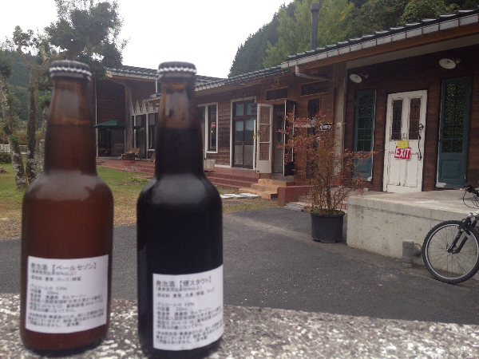

「田舎のパン屋が見つけた腐る経済」を読んだのは数年前。
こんなことを考えるパン屋さんが有るんだと、岡山の勝山にあるタルマーリーを最後に訪問してから二年が経っていた。
つながるとはこんな時におきるのかな、と思うつながりがあった。
地ビールの製造に興味を持ったのが1995年頃のことです。
確か、地ビール一号の越後ビールが作ったというオーシャンエールと言うビールを飲んだ。こんなビールが有るのかと全国を飲み歩いた。
今まで飲んでいたビールとは一線を引くものがいくつかあった。
それから、酒造には興味があるものの手を出すことは無いと思っている。
国税庁のホームページで最近酒造免許を取った個人や小さな会社を調べみると意外と沢山あった。
福山や益田にワインを製造する会社が誕生している。
そして、地ビール(発泡酒です)をタルマーリーが製造しているのです。

それと、同時にタルマーリーが二年前くらいに鳥取県智頭町へ移転していのを知った。
田舎でのパン屋の経営にはとても興味があった。
その上、地ビールまで製造しているというタルマーリーはどのようにしているのだろうか。

訪問して感じたことは、
地消地産の循環を目指すタルマーリーは、個人レベルの経営でないことだった。以前の店もそうでしたが、夫婦以外に一緒に働いている人は5-6人はいるだろうか。
パンの製造とビールの製造、それにカフェなどの運営から考えると決して多い人数ではないが、そこで働いている人は元気があった。
都会との循環が廻るようになれば、このような暮らしもいいものだろうと思うし、高齢社会の現実を考えるとインターネットを活用した若者の田舎暮らしは必要と考える。
実際、可能になるものだと思っている。
日本は、高齢社会と共に知識社会に突入している。
これをチャンスと捕らえれば、今までに無い社会ができあるがるだろう。
そのためにも、パラダイムシフトとはどんなものか今の若い人達に知ってほしいと思う。
香珈では、新しい社会を豊かに生活するためのヒントや学び方をこれから発信していきます。
 タルマーリーの接客はとても気持ちよかったです。
これからもこのサービスで新しい形を作っていってほしいです。
タルマーリーの接客はとても気持ちよかったです。
これからもこのサービスで新しい形を作っていってほしいです。